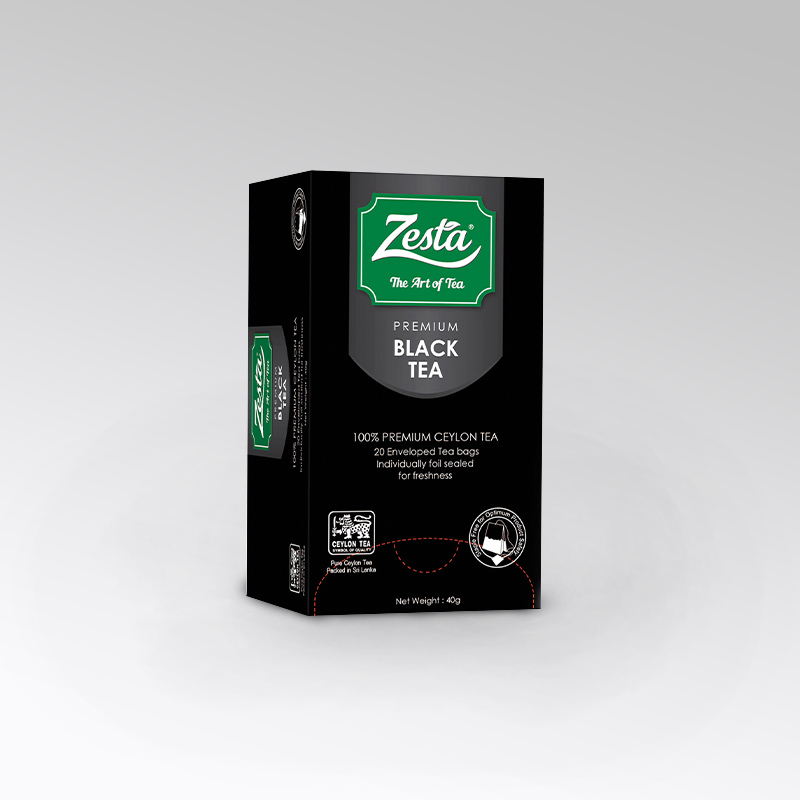
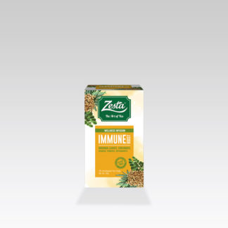

Our Teas
 Home to the mythical mountains that birthed the saga of Ceylon Tea, Sri Lanka is renowned for traditional, high-quality tea enjoyed by connoisseurs the world over. Browse through an exciting range of Black, Green and Flavoured Teas as well as our newest additional, Oolong Tea from China.
Purchase Here